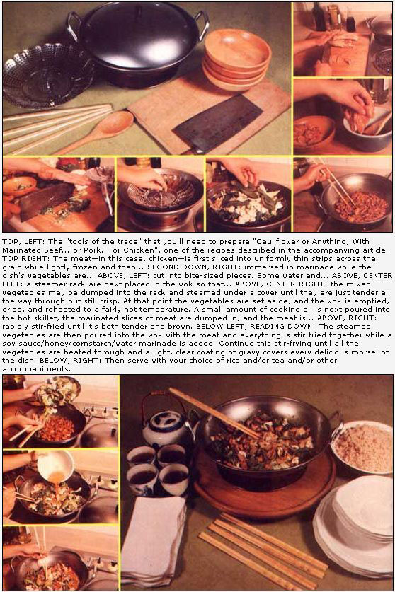

Mix a little Confucian artistry, some Taoist diet discoveries, and a bit of Zen harmony together in an ancient Asian energy-saving cooking vessel . . . and you've got yourself some downright delicious eatin'.
Years ago, I bought a wok-the traditional Asian round-bottomed frying pan-simply because I've always liked Chinese restaurant cooking. And because I had a vague desire to whip up my own chow mein, instead of carrying it home in the equally traditional white paper cartons.
Once that wok entered my kitchen, though, it almost magically began to transform my typically mundane American food philosophy . . . into a whole new nutritional consciousness. To put it another way: That funny, bulge-bottomed cooking utensil may have looked sorta strange to my Western eyes at first glance . . . but it has certainly changed me into a happier, healthier, and more adventurous consumer of all kinds of (both new and reborn old) delectable things to Build This "Nothing To It" Outdoor Cold Cellar
As I began to explore my wok's possibilities, I naturally turned to some of the many Chinese and Japanese cookbooks on the market. And I immediately discovered that Confucius (who was a philosopher, teacher, and gourmet 500 years before Christ was born) both advised a cultivation of the taste for fine food and viewed its preparation as an art.
I also learned that the early Taoists-in a quest for natural simplicity and good health-had, through trial and error, created a largely vegetarian diet that modern nutritionists still consider exceptionally well-balanced.
And-as I experimented with such recipes-I quickly developed a Zen-like, intuitive understanding, appreciation, and "feel" for what I ate. Pure came to mean "clear and rich" to me. Sweet, "fresh air or water". Smooth, "not pasty". Young and tender, "crisp and fully toothsome".
I soon found that when I thought of a dish's texture, I was actually visualizing several intertextures . . . including crisp, tender, smooth, and soft (but never soggy, stringy, or mushy). And, above all, I was developing images of clear greens and yellows (vegetables), rich browns (gravies), glossy oranges (glazes), and golden hues (broths) whenever the subject of food color came to mind. Why, I was starting to use my eyes, nose-even my teeth!-as well as my tongue and palate to savor the recipes I prepared and ate. This was a new experience for me.
Furthermore, the experience was rapidly reflected in my explorations of the local produce markets (I hadn't yet started to grow my own vegetables). As I felt my way deeper and deeper into wok cookery, I automatically and naturally began to avoid the rich, heavy, potatoes-and-gravy, "put on the pounds, set yourself up for a heart attack" kind of cooking on which I had been raised. Instead-and almost without even knowing it was happening-I was gravitating toward more and more crisp, fresh vegetables lightly sauteed in small amounts of polyunsaturated peanut oil or safflower oil . . . and served up with medium-sized portions of poultry, fish, or shellfish instead of thick, gutbusting slabs of red meat.
In short, and before I even knew it, I had myself and my family switched to a sinfully delicious and sensuous, healthful, low fat, low calorie, low cholesterol diet. And I happily trace all my new food knowledge, different and refreshing taste sensations, and vastly improved bill of fare directly to the ownership of my big steel wok.
Woks are now available in a number of sizes and several materials. (If you don't mind cooking your food in plastic, there's even a temperature-controlled electric number on the market .. . which is coated inside with non-stick Teflon II.)
Buy an iron or steel wok (but not stainless steel, because the metal develops hot spots), and buy a big one. Much wok cookery centers on leafy vegetables that "cook down" and, while you can always fry small quantities in a giant wok, you can't prepare large amounts in a little one. Confucius didn't say that. I did ... after grumpily removing dried bean sprouts and congealed cornstarch gravy from the family range after an unsuccessful attempt to cook a meal for eight in a "family of four"-sized wok.
Make sure you get the perforated support ring (which will keep your roundbottomed pan sitting upright on a gas, electric, or other "conventional" kitchen stove) that should accompany any wok you buy in this country. And-if they aren't supplied as a kit with the cooking vessel-you'll also want to purchase a few accessories that can make wok cookery much easier and more en joyable: [1] a tight-fitting, high-crowned lid for steaming, [2] a bamboo or wire steaming rack, [3] a curved steel or wooden turning paddle, [4] long wooden chopsticks (a necessity, I think), and [5] a drainer hoop screen for lifting deepfried foods up out of the hot cooking oil.
The traditional Asian skillet was created thousands of years ago and is still used daily throughout the Orient. Furthermore, thanks to its unique shape, it is one of the most energyefficient cooking vessels ever devised . . . for at least two reasons.
In the first place, the pan's rounded bottom is designed to sit right down into a small, open-topped stone or ceramic burner fired with charcoal, wood, dried grasses, animal dung, or any other inflammable material that can be scrounged up in a fuel-poor Asian nation. Naturally, then-by curving directly down into the firebox of its stove (instead of merely resting on the top of a kitchen range the way conventional Western pans do)-a wok can absorb more heat more directly from a given flame than any "ordinary" flat-bottomed skillet ever can.
Second, if care is taken to position even a tiny blaze directly under a wok's lowest point . . . the heat from that fire will "roll" evenly up and around the pan's curved sides. This, in effect, allows the container to "use and reuse" the same small flame over and over again . . . thereby making it possible to stir-fry or otherwise cook the entire contents of a good-sized wok on far less fuel than a Western range customarily consumes while heating a saucepan much tinier in size. (Pretty clever, these Orientals!)
If you want to-and if you're lucky enough to have an old wood-burning range sittin' in your kitchen-you can come close to realizing 100% of both these efficiencies quite easily: Just throw away the perforated metal ring that came with your wok, lift one of the "eyes" (or lids) out of the stove's top, and nestle your pan's round bottom down into the hole you've created. And if you don't own a wood-burner? No problem. Place your wok's support ring around one of the burners on your gas or electric range and then simply position the pan in the holder: Thanks to the Oriental skillet's unique shape, it'll still cook anything you put in it faster and with less Btu's than any flat-bottomed utensil you've ever tried.
We all know that the Chinese technique of "stir-frying" means exactly what the name implies: Vegetables, meats, and-occasionallyother ingredients (such as special doughs) are cut into small pieces and then stirred as they're quickly and lightly fried in a wok in a small amount of oil.
Few of us, however, know that the stir-frying process, in Chinese, is called chow . . . or that the term pon means the same thing, except that sauces and/or seasonings are added during the process. (As I developed my wok skills, I gradually came to cook more pan than chow.)
Of course, as you really begin to get into the spirit of Oriental cookery, you'll sooner of later want to have a shot at a variation on stir-frying known as "twice-frying". This consists of [1] the quick stir-frying of cutup vegetables in searing oil (to seal in their natural juices) followed by [2] taking the treated bits of vegetables off the fire and reserving them-for up to a full day, when necessary-[3] to fry again later with other ingredients in the preparation of a particular dish.
Come to think of it, that-plus the information in a Chinese, Japanese, or Philippine cookbook or two-is about all you have to know to put you and your wok well on the way to "cooking Oriental". Chances are you already have most of the ingredients you need in the pantry, refrigerator, and freezer.
And if you really want to bring out the "Asian flavor" of your recipes, you have only to pick up a few "exotic" items on your next grocery-shopping trip: garlic, wine (sherry, sauterne, and rose), soy sauce, sesame oil (for seasoning only, not stir-frying), ginger (either raw root or prepared powder), sugar (substitute honey, if you like), cornstarch, wheat flour (used only rarely), and vinegar (rice wine, cider, and/or flavored red or white). It's up to you whether or not you want to add MSG (monosodium glutamate) and its reputed hazards to your diet.
Then again, who says that everything whipped up in a wok has to have an Asian tang? Sure. It's fun to throw together a Chinese recipe in one of the bubblebottomed pans . . . but it's also great sport to use the Oriental skillet in the preparation of, say, your family's favorite Norwegian/Cherokee dish or Mrs. Murphy's chowder.
As a matter of fact, firsthand experience has shown me that a wok can turn almost anything into a true taste treat. You name a vegetable and I'm almost sure to name one right back at you that fits my style of wokking: bean sprouts and nearly any other kind of sprout you've ever heard of, celery, bok choy (Chinese cabbage), cabbage, chard, spinach, lettuce, endive, mushrooms, onions, scallions, leeks, fresh ginger root, asparagus, snow pea pods, shelled peas, summer squash, crookneck squash, zucchini, green peppers, turnips, radishes, eggplant . . . and so on through the edible plant kingdom.
Nor do I recognize any limit when it comes to stoking my wok with meat. Once I'd satisfied my curiosity about the chicken, duck, shellfish, lean pork, and lean beef that have traditionally been prepared in one of these pans, I began to range further afield . . . all the way to (here come the fats and cholesterol!) sausages of every kind including linguisa, bratwurst, Italina sweet, and Polish.
And then there are "bean threads" (transparent Chinese noodles) and regular of Italian vermicelli which-when soaked, steamed, or boiled beforehand-can be stirfried quite nicely with vegetables or bits of spiced meat. And chewy high-vitamin brown rice (even "nutritional no-no" polished white rice, if you don't know any better) and bulgur wheat that-after steaming or boiling-make ideal candidates for an adventurer's pon pan.
To say nothing of the gourmet specialties that can be tipped into a hot wok from time to time: fresh, frozen, or canned shrimp or crabmeat, tinned bamboo shoots and water chestnuts, dried mushrooms, and (from Chinese markets) Szechwan peppers, fivespices seasoning, oyster sauce, Hoisin sauce, and black bean sauce.
To put it another way, the only real limit that you should ever find placed on your wok cookery . . . is the limit of your own imagination. No, Confucius didn't coin that motto either: I did . . . after I once found myself excitedly prowling a giant specialty produce market in search of something new-a vegetable I'd never seen or eaten before-to fix for dinner . . . wok-style.
A wok is so darned efficient and does its job so quickly that preparation and technique-gettin' things ready for the pan and then slidin' 'em in, stirrin' 'em, and slidin' 'em out again-are really 98% of what working with one of these skillets is all about.
Since we know that [1] a wok is noted for fast, efficient cooking and [2] bacon-thin slices of anything will cook through quickly and evenly while larger chunks merely scorch on the outside and remain raw at the center . . . it's easy to understand why experienced chefs insist that wok cookery actually begins with a good, sharp knife.
A Chinese cleaver, of course, is ideal for the job . . . if you happen to enjoy using one. But then, so is a French chef's cutting implement, or a good of American kitchen-variety butcher or paring knife. It really doesn't matter which weapon you choose to use . . . as long as you hone, steel, and strop the blade to a super-fine edge that'll straight-cut, diagonal-slice, and mince both meats and vegetables into precisely portioned cubes no more than 1" square or "matchstick" strips just 1" to 1-1/2" long.
If wok cookery begins with a proper knife, it then proceeds directly to an assortment of bowls: bowls to hold cutup vegetables, sliced meats, sauces, and marinades from the time they're prepared until you're ready to tip them into your Oriental skillet.
And once all the ingredients of a recipe ore dumped into your wok, you'll want to stir and turn them rapidly to mix everything together and ensure that every morsel cooks evenly. Some folks like to use a steel or wooden spoon-a kind of curved, wok-fitting ladle or paddle made for the purpose-for the job. I prefer long wooden chopsticks. You make your own choice: The idea is to turn the bits of vegetable and meat over and over while sliding the "done" pieces up the sides and letting the "less well done" chunks slip down into the sizzling oil in the pan's hotter bottom.
One more thing: When I'm preparing, a stir-fried supper, I like to think of the artistic Confucian and austere Taoist heritages of wok cookery . . . all filtered through the perspective of a little ascetic Zen philosophy.
Which is to say that-rather than trying to put my wah (spirit) in harmony with the entire universe-I strive for the moment for a feeling of harmony with my home, my kitchen, my utensils, my wok, the food I'm handling, the flame over which the meal will be cooked, and my family (who will soon be nourished by my work). I like to reinforce this mood by pinning a favorite haiku (17-syllable Japanese poem) or John Donne poem to the wall over my cutting board before I begin and playing some appropriate music on the stereo in the next room while I prepare the supper.
Although this dish would show up on a Chinese restaurant's menu as "Egg Foo Yong", I call it "Stir-Fried Spinach With Eggs . . . and, Some Sundays, Ground Sirloin". It calls for:
1/2 pound of washed spinach leaves
2 cloves of garlic
1 large Bermuda onion
1/2 dozen large, fresh eggs
1/2 teaspoon of salt
1-1/2 tablespoons of peanut or safflower oil
soy sauce to taste
Shred the spinach . . . mince the garlic . . . strip and slice the onion and cut each slice into halves . . . and break the eggs into a bowl and beat them. Next pour the oil into your wok, heat it to a medium temperature, and stir-fry the garlic and onion for about a minute (until they're golden-clear, but not brown). At that point add the shredded spinach and, while turning it with your ladle or large chopsticks, stir-fry the leafy vegetable until it barely starts to wilt.
Pour in the soy sauce, tip in the eggs, and let the eggs harden into a pancake. Then either turn the cake with your ladle and brown its other side (if you want a Foo Yong-like omelette) . . . or simply stir and scramble the eggs into the spinach until they're nicely solid, but still soft. Serve immediately to four of your favorite people as a side dish to, say, meatless soybean meatloaf . . . or as a main dish with its own steaming side order of brown rice or bulgur wheat.
And if you want a higher-cholesterol, higher-fat variation on this recipe, just add 3/4 pound of lean ground sirloin and 1/4 cup of California Chablis to the above ingredients. Then follow the directions I've already given but-when the onion and garlic are golden-clear-dump in the ground beef and stir-fry the meat until it is finely broken up and browned (yet still tender) before adding the spinach to the pot. The beef and spinach then should be stirred together until the leaves are almost wilted. That's the signal to pour in the Chablis, soy sauce, and beaten eggs. Scramble the mixture with your ladle or chopsticks until the eggs are firm, but still tender . . . and serve the protein-rich dish over thick, freshly toasted slices of multi-grain dark bread, with glasses of wine poured from the remainder of that bottle of Chablis.
Other variations: Try substituting finely shredded Swiss chard or turnip greens for the spinach called for above. Or use crumbled Italian sweet sausage instead of ground beef when you're whipping up the augmented recipe (you can also replace the wine in that version with rice wine vinegar if you like). And-if multi-grain dark bread is too heavy for your taste-serve the finished dish on coarse, crusty, hot French bread. Substitution and addition are the secrets of a surprising range of taste delights when you make a wok your major cooking implement.
It should be obvious by now that my particular form of wok wielding tends to turn out something other than the traditional Chinese dishes you've probably always associated with this roundbottomed pan. So be it. And that's precisely the point I want to get across: The wok certainly deserves far wider use and appreciation than it currently enjoys in the Western world, if we judge it on nothing but versatility alone. Consider the following recipe, for instance:
I call this one "Cauliflower or Anything, with Marinated Beef . . . or Pork . . . or Chicken". For the main part of the dish, you'll need:
1/2 pound of beef (or pork or chicken breast)
1 pound of cauliflower (or broccoli or cabbage hearts)
3 tablespoons of soy sauce
2 teaspoons of sugar (or honey)
2 teaspoons of cornstarch
1/2 cup of water
2 tablespoons of peanut or safflower oil
And, for the marinade, you'll want:
2 tablespoons of soy sauce
2 teaspoons of sugar (or honey)
2 tablespoons of wine (sherry or sauterne)
2 tablespoons of cornstarch
Whichever meat you use, it'll cut easier if you slice it into uniformly thin strips across the grain when the beef, pork, or poultry is lightly frozen. Mix up the marinade, immerse the slices of meat, and let it soak in the solution while you prepare your vegetable.
Wash the cauliflower or broccoli or cabbage hearts and cut it (or them) into bite-sized pieces. Then put some water and a steamer rack into your wok, place the chunks of vegetable on the rack, and steam them for about five to seven minutes after the water begins to boil (or until the vegetable bits are steamed through, but still crisp).
Set the steamed vegetable aside, empty the remaining water from the wok, place the pan back on its support ring, let it dry completely, and reheat the utensil to a fairly hot temperature. While the skillet is heating, mix the three tablespoons of soy sauce, the honey or sugar, and the cornstarch together with the half cup of water.
Finally, put the cooking oil in the wok, dump in the marinated meat (mar inade and all), and fast-fry the slices until they're both tender and brown. At that point, pour in the steamed vegetable and stir-fry it with the meat as you add the soy sauce/honey (or sugar)/cornstarch/water mixture. Continue the stirfrying until the vegetable is heated through and a light, clear coating of brown cornstarch gravy covers everything. Serve with steaming brown rice.
If you don't have any cauliflower, broccoli, or cabbage hearts (or don't want to use them in this recipe) . . . try leeks, bok choy, chard stems, or zucchini. Or mix a little of everything together! (Whenever you're steaming a combination of two or three or more vegetables, place the one with the firmest texture-and/or that is cut into the largest and thickest pieces-on your wok's rack first . . . and so on down the line to the most delicate and/or finest sliced edible in the collection. That way everything will arrive at just the right level of steamed, crispy perfection at the same instant. Master this little trick, and you'll find that one big wok and a single steamer rack can save the washing of many pots.)
And if you want yet another variation for this dish, substitute your choice of sausage for the beef, pork, or chicken called for in the list of ingredients. (Or add the processed meat to one or more of the other three.) Just remember that the sausage has its own spicy flavor and won't need the marination.
Fast frying and quick steaming aren't the only tricks a wok has up its sleeve: The skillet makes a great deep-fryer too. In fact-thanks to the pan's concave shape-it seems to take less oil to create a given amount of usable deepfrying volume in a wok than in a straight-sided pot or skillet.
Have you ever tried tempura (Japanese-style batter frying)? It's an exceptionally easy method of cookery (especially when done in a wok). And talk about versatility! Almost anything edible can be batter fried: small pieces of meat, slices and slivers of boneless fish or shrimp, small whole onions, little chunks of eggplant, strips of zucchini, cut string beans, pieces and slices of pumpkin, yams, turnips, parsnips, potatoes, celery, radishes, oysters, chestnuts ... even sections of carrot tops and parsley.
The Japanese markets in most of the larger cities sell prepared tempura batter mix. Or you can make your own: Just stir one cup of whole wheat flour together with one to one and a quarter cups of cold water (put an ice cube in if you have to), one-half teaspoon of salt, and one egg (the egg is optional, try the batter both ways). Add flour or water to the coating as you work with it so that it spreads thinly and evenly over anything that is dipped into the solution. And keep the batter very cold as you use it (set the bowl holding the mixture down into a bowl of ice cubes if you can).
All the vegetables, meats, and other ingredients that you intend to batter-fry should be sliced, cubed, stripped, or diced into pieces that are no more than a quarter inch thick (some of the slices, of course, may be an inch or more across ... but none should measure more than one-fourth inch thick).
Keep your cut vegetables chilled-but dry-and dip each piece or slice into the batter before placing it in your wok's hot (very hot!) cooking oil. Strips and chunks of fish or meat should be rolled in white flour first and then dipped into the batter before being placed in the hot oil.
Beware of splatters (they burn!) as you put several chunks of the coated food into your wok and turn each one once with your long chopsticks. When the batch's batter has changed to a light golden-brown and every piece is fully crisped, use a handled lifting screen to raise the slices of meat and vegetables out of the oil. (Don't try to cook too many pieces at once. It will reduce the temperature of the cooking oil, extend the frying time, and make the batter tough instead of delightfully crunchy.)
Drain the cooked food on split-open brown paper bags and eat "as is" . . . or served-if you like-with soy sauce or one of the commercial tempura sauces that are available in Asian grocery stores.
And for real fun, cut up your vegetables and meats before the meal ... then show your family and/or guests how to dip and fry their own. (As long as you keep the food and batter cold, the cooking oil very hot, and caution everyone about splatters, you can't go wrong.) The dinner or supper will probably turn into one of the most memorable you've ever had.
I've been able to do little more than hint at the wok's many possibilities in this article, but I do hope that those hints have whetted your appetite for more information about this curious concave Chinese cooking vessel.
Honestly! A few experiments with one of these round-bottomed pans can change your entire outlook about food preparation and nutrition. C'mon. Give a wok a fry.
EDITOR'S NOTE: One very good and very inexpensive introduction to Chinese cooking that you might find interesting is How to Cook and Eat in Chinese, by Buwei Yang Chao (Vintage Paperbacks, a division of Random House). It's available for $2.45 from any good bookstore or $2.45 plus 95 cents shipping and handling from Mother's Bookshelf, P.O. Box 70, Hendersonville, North Carolina 28739.
|
 |
|
|